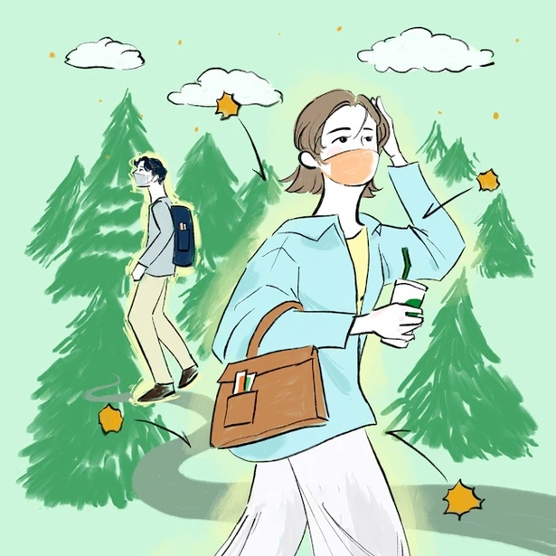
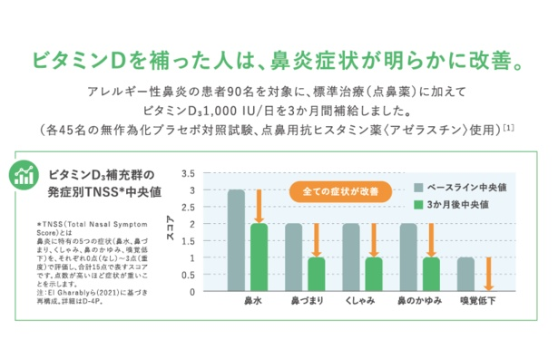
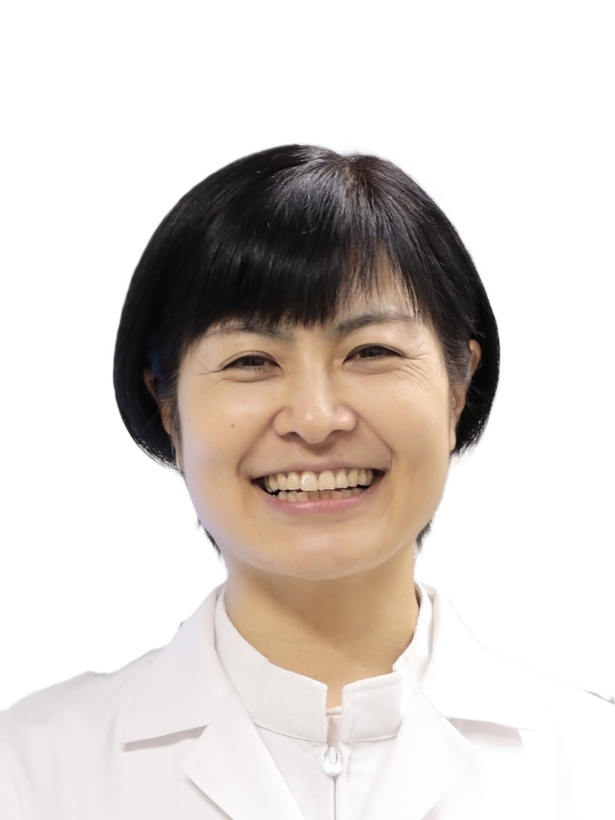
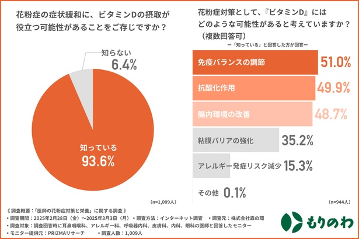
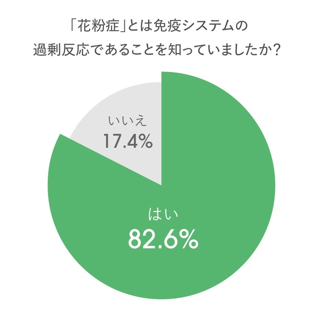
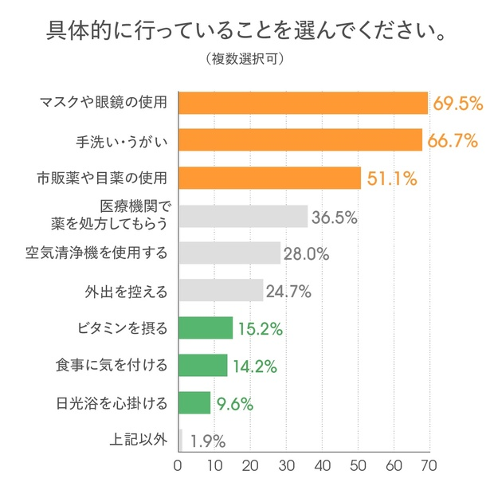
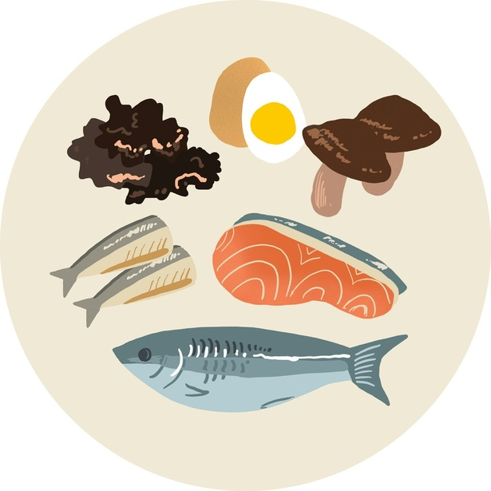
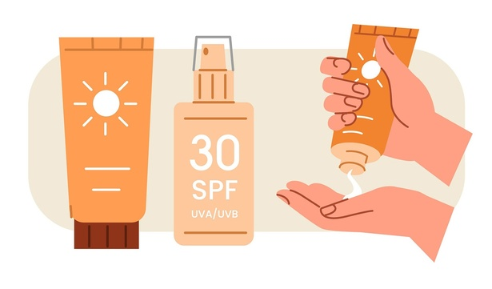
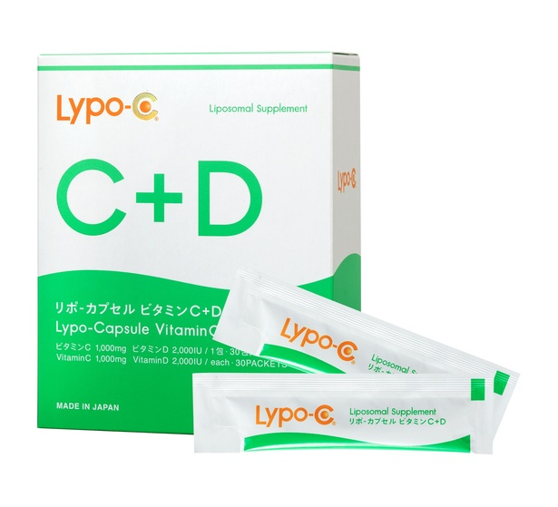

今年も本格的な花粉シーズンが到来した。ウェザーニュース「花粉症調査 2025」によると、花粉症を抱える日本人は58%。約2人に1人が症状に悩む、国民病でもある。そんななか、花粉症の人にぜひ摂取してほしい栄養素が、ビタミンDだ。株式会社森の環が行った「医師の花粉症対策と栄養」に関する調査によると、医師の93.6%が花粉症の症状緩和にビタミンDが役立つ可能性があることを認識しているという。なぜビタミンDが花粉症対策に有効なのか。どのように摂取すればよいのか。本記事では、ビタミンDによる内側からの花粉症対策について、東京慈恵会医科大学・越智小枝先生の解説を交えて紹介しよう。
冒頭で「日本人の約2人に1人が花粉症」というデータを紹介したが、花粉症の日本人は年々増えている。日本耳鼻咽喉科学会の調査結果によると、花粉症の有病率は1998年が19.6％、2008年が29.8％、2019年が42.5％と、10年ごとに約10％ずつ増加。その背景にあるのは、日本の国土面積の12%（全国の森林の18％）を占める広大なスギ林だ。2019年の時点ですでに、日本人の3人に1人以上（38.8％）がスギ花粉症と推定されている。
また、近年は花粉症の低年齢化も進んでおり近年は2〜3歳から発症するケースが見受けられるという。株式会社一条工務店が行った「花粉症に関する意識調査 2025」によると、4割以上の人が「子どもが花粉症を発症した年齢は3〜5歳」と回答したという。
大人だけでなく、幼児までもが花粉症に悩む時代。そんないま、多くの医師が花粉症対策の"新常識"として、ビタミンDに注目している。そもそも花粉症は、花粉に対する免疫システムの過剰反応が原因。ビタミンDには免疫を正しく働かせる土台をつくり、過剰反応を抑えて、穏やかに調整する作用があるため、花粉症などのアレルギー症状を抑える効果が期待できる。実際に、一般社団法人 日本オーソモレキュラー医学会が紹介している、アレルギー性鼻炎の患者90名を対象に行った調査では、ビタミンDを補った人は鼻炎症状が明らかに改善したと報告されている。

なお、越智先生によると、花粉症の有無にかかわらず、ビタミンDはすべての人におすすめとのこと。「花粉症ほどではないが、春は鼻先がムズムズするという経験がある方もいらっしゃると思います。それも程度が異なるだけで、花粉症と同じアレルギー反応ではあるのです。そもそもビタミンDは、体のベースを整える働きを持っています。まだ花粉症ではないという方は、免疫のベースを整えて崩れにくい基盤をつくるためにビタミンDをおすすめします。また、すでに花粉症をお持ちの方にも、症状を緩和することが期待されますので、同じくビタミンDはおすすめです」と話している。

多くの医師が注目するビタミンDだが、"内側ケア"による花粉対策を実施している人は、まだ少ないのが現状だ。株式会社スピックが花粉症の自覚症状がある1000人を対象にアンケート調査を実施したところ、花粉症が免疫の過剰反応によって起こる症状の一つであることを理解している人は82％に上り、メカニズムが広く認知されているいっぽう、「日光浴を心がける」「ビタミンを摂る」「食事に気をつける」といった体の内側を整えるケアの実施率は、わずか1〜1.5割と判明。「マスクや眼鏡の使用」「手洗い・うがい」「市販薬の服用」など、花粉を外から防ぐための対策が高い実施率を占めたという。



ここまで花粉症対策の観点から、ビタミンDの有用性を解説してきたが、ビタミンDを摂取するメリットは、アレルギーの抑制だけではない。カルシウムの吸収を助けて骨や歯を丈夫にしたり、メンタル不調を緩和したり、動脈硬化やがんのリスクを抑制したり、免疫細胞の働きを助け、感染症から体を守ってくれたりと、さまざまな効果が期待できるのだ。
メンタル不調についてもう少し詳しく説明すると、ビタミンDは「幸せホルモン」と呼ばれる脳内物質「セロトニン」の合成をサポートしているため、不足するとうつうつとした気分を引き起こす原因になる。また、ビタミンDが不足すると、セロトニンを材料とする睡眠ホルモン「メラトニン」も不足し、体を休息モードにする副交感神経が優位になりづらい状態に。ビタミンDは日光を浴びることで生成されるため、日照時間が少ない冬は特に不足しやすくなる。「冬になると気持ちが落ち込んでやる気が起きない」という冬の「なんとなく不調」は、ビタミンD不足が原因の場合もあるそうだ。
全身の健康をつかさどる"総合コンディション栄養素"ともいえる、ビタミンD。しかし、東京慈恵会医科大学の調査（2019年4月〜2020年3月、東京都内健診受診者5518人）では、日本人の約98%がビタミンD不足に該当していると判明。日焼け止めや日傘によるUVケアの普及、日光浴の減少などが影響しているという。なお、ビタミンDの必要量は、年齢や性別によって異なるが、厚生労働省の食事摂取目安量は成人で1日あたり360IU（9.0㎍）。耐容上限量は成人で1日あたり4000IU（100μg）といわれている。
ビタミンDを多く含む食品は、キクラゲ、鶏卵、うずらの卵、しらす、サケ、牛乳、チーズなど。これらの食品を食事に取り入れることに加え、日光を浴びてビタミンDを体内で生成することも重要だ。また、サプリメントで無理なくビタミンDを補う方法もある。越智先生は「ビタミンDを摂取する方法は、食べ物・日光・サプリメントの3つです。しかし食べ物はほかの栄養素とのバランスや手間がありますし、紫外線を浴びることはもちろんデメリットもあります。食べ物と日光浴で足りない分をサプリメントに頼るというのは、無理なく継続するにあたっておすすめできます」とコメントしている。



ビタミンDとビタミンC、健康と美容に欠かせない2種類のビタミンを、一度に効率よく補えるサプリメント。1包にビタミンCを1,000mg、ビタミンDを2,000IU、たっぷり配合。極小で均一なカプセルとサラサラの液状で、吸収性の向上を目指している点も特徴だ。美容にストイックな有名女性タレントが愛飲していることでも知られている。
「花粉シーズンが始まってからでも、ビタミンDを取り入れることは決して遅くありません。飛散ピーク時のコンディションを内側から整える重要な一手となるからです。免疫を"正しく働かせる"ための基盤づくりとして、ビタミンDはぜひ積極的に取り入れていただきたい栄養素です」
— 東京慈恵会医科大学 越智小枝先生
スギ花粉はすでに多くの地域で飛散のピークを迎えているが、ヒノキ花粉はこれからが本番。まずは今日から、従来の花粉対策に"内側ケア"をプラスしてみては？
※記事内の価格は特に記載がない場合は税込み表示です。製品・サービスによって軽減税率の対象となり、表示価格と異なる場合があります。
本ページはウォーカープラス掲載記事（元URL: walkerplus.com/article/1333242/）を、転載元（trilltrill.jp/articles/4644095）をもとに復元したものです。